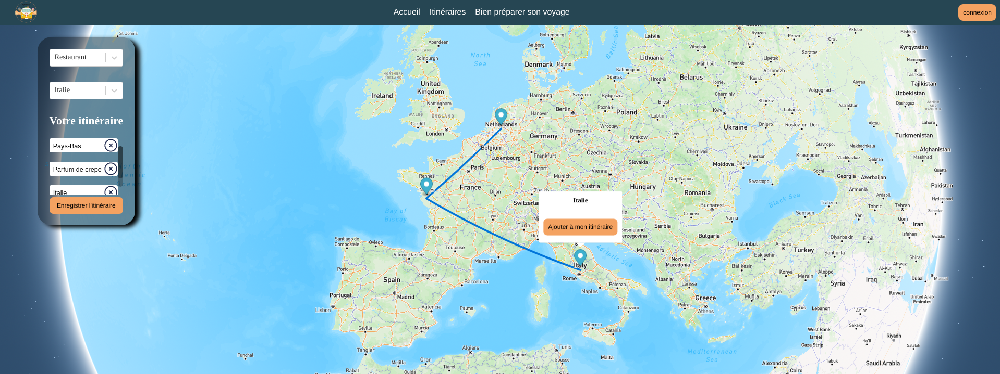
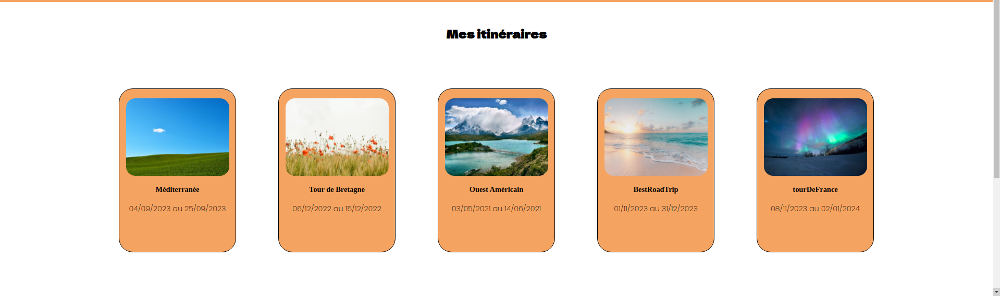
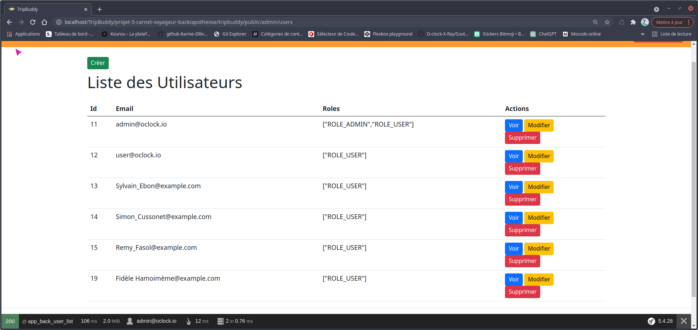
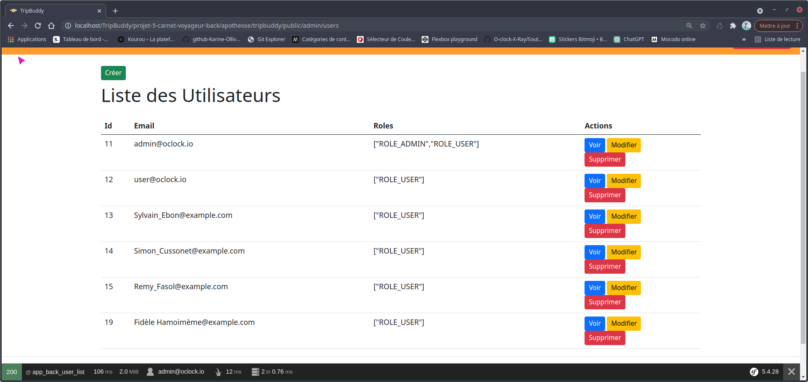

TripBuddy
Projet de fin de formation
Mon projet sur GitHub - Partie Frontend Mon projet sur GitHub - Partie BackendPrésentation du Projet
Bienvenue sur TripBuddy, votre compagnon de voyage ultime ! TripBuddy est un site de planification de voyage conçu pour simplifier l’organisation de vos aventures. Que vous soyez un voyageur chevronné ou que vous planifiiez votre premier voyage, TripBuddy vous offre une expérience conviviale et interactive.
Fonctionnalités Clés
- Carte Interactive : Explorez le monde à travers notre carte interactive alimentée par l’API Mapbox.
- Planification Intuitive : Créez un compte pour planifier vos voyages en toute simplicité.
- Détails des Destinations : Cliquez sur un marqueur pour afficher des informations sur la destination.
- Itinéraire Personnalisé : Visualisez votre itinéraire sur la carte avec un tracé clair et compréhensible.
- Sauvegarde d’Itinéraire : Enregistrez vos itinéraires pour les retrouver facilement lors de vos prochains voyages.
- Conseils de Voyage : Trouvez des conseils utiles pour préparer au mieux votre voyage.
Technologies Utilisées
- Symfony pour l’API côté serveur.
- React pour le développement du front-end interactif.
- Mapbox API pour une cartographie précise et riche en fonctionnalités.
- Base de Données pour stocker les itinéraires des utilisateurs.
- PHP pour la gestion côté serveur.
Captures d’écran
  
